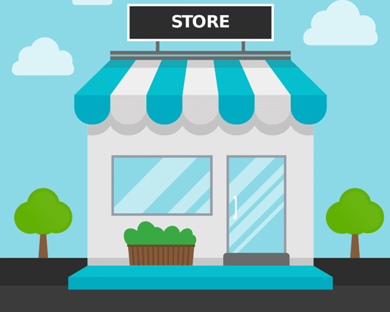
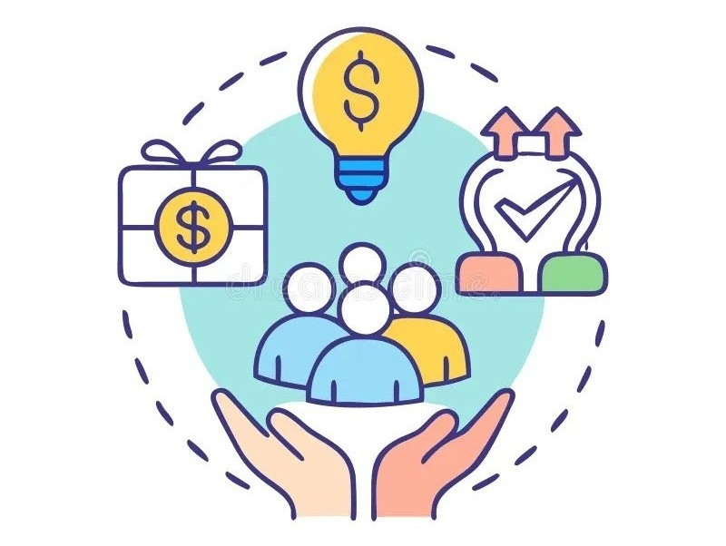
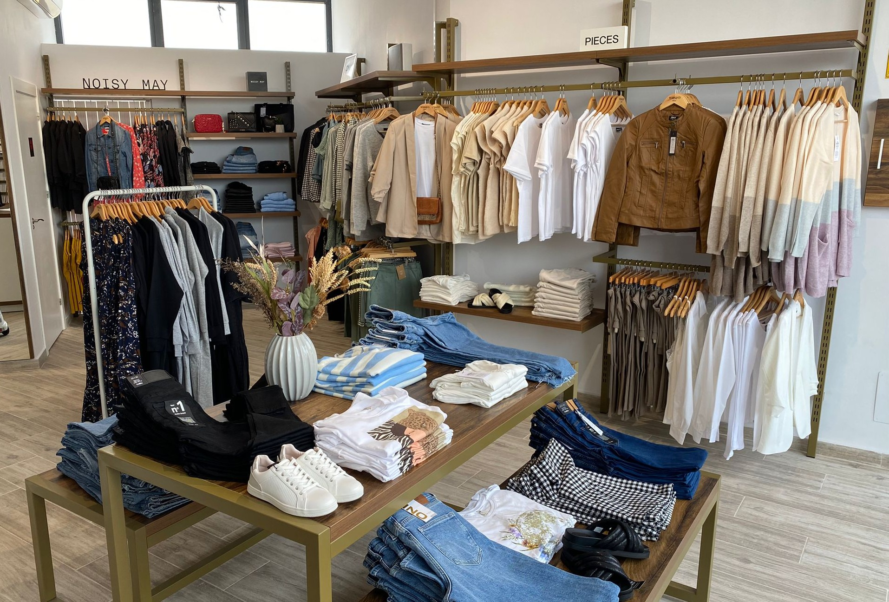
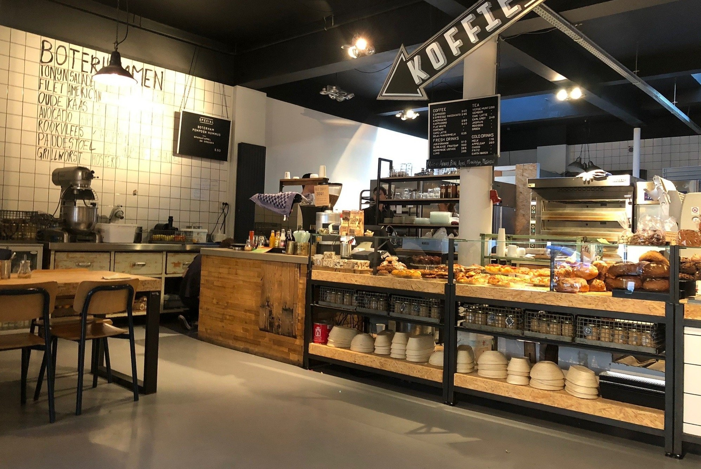

Existen diversos tipos de emprendimiento, y la forma en que se clasifican puede variar. Sin embargo, una de las maneras más comunes de agruparlos es según su objetivo, modelo de negocio o el impacto que buscan generar.
Por su objetivo y modelo de negocio

Emprendimientos de pequeñas empresas
Son los negocios más comunes, como tiendas locales, restaurantes familiares o servicios profesionales. Generalmente, su objetivo no es el crecimiento exponencial, sino generar ganancias estables para el dueño y, en algunos casos, para un pequeño equipo de empleados.
Emprendimientos escalables
Suelen estar enfocados en la innovación, especialmente tecnológica. Desde el inicio, su modelo de negocio está diseñado para crecer de manera rápida y masiva, a menudo con el objetivo de expandirse a nivel global y atraer grandes inversiones.
Emprendimientos sociales
Su principal objetivo no es la ganancia económica, sino generar un impacto positivo en la sociedad o el medio ambiente. Buscan resolver problemas sociales o ambientales a través de un modelo de negocio sostenible.
Emprendimientos innovadores
Se basan en el desarrollo e investigación para crear productos o servicios completamente nuevos y disruptivos. Suelen tener el potencial de generar un gran impacto en el mercado y cambiar la forma en que se hacen las cosas.
Emprendimientos de oportunidad
Surgen al identificar una necesidad o un vacío en el mercado. El emprendedor aprovecha la oportunidad para ofrecer una solución y satisfacer esa demanda.
Emprendimientos por necesidad
Estos surgen cuando una persona se ve obligada a emprender debido a la falta de empleo u otras circunstancias. A menudo, se inician con un bajo capital y se enfocan en generar ingresos para subsistir.
Por el sector o la forma de ejecuciòn
Emprendimiento digital
Se basa en la tecnología y el internet para operar, como el comercio electrónico, el marketing digital, el desarrollo de aplicaciones o los servicios en línea.

Emprendimiento cultural
Promueve proyectos artísticos y creativos, como editoriales independientes, galerías de arte o startups de contenido audiovisual.
Emprendimiento corporativo
Se produce cuando un empleado desarrolla una idea innovadora dentro de una empresa ya establecida. La compañía fomenta el espíritu emprendedor para mantenerse competitiva y fomentar la innovación interna.
¿Qué tipo de emprendimiento es para ti?
Responde las siguientes preguntas para descubrir qué tipo de emprendimiento se adapta mejor a tus intereses y habilidades.
Ejemplos de emprendimientos
Un vistazo a diferentes tipos de negocios innovadores, ¿Te interesan?

Tienda de ropa local
Negocio físico que ofrece prendas y accesorios, atendiendo a la comunidad cercana y adaptándose a las tendencias locales.
Desarrollo de aplicaciones
Startup tecnológica que crea apps móviles o web para resolver problemas específicos o mejorar procesos en empresas.
Proyecto social
Iniciativa que busca mejorar la calidad de vida de una comunidad, como programas educativos, ambientales o de salud.
Tienda online
Emprendimiento digital que vende productos por internet, utilizando plataformas de e-commerce y redes sociales.
Estudio creativo
Empresa dedicada al diseño gráfico, fotografía, producción audiovisual o arte digital para clientes y marcas.

Cafetería temática
Negocio gastronómico con un concepto original, que ofrece experiencias únicas y productos diferenciados.